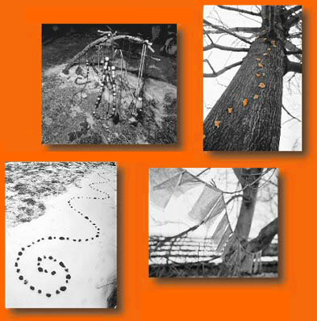

pro¾itkový kurs Instruktorù Brno | vjinemrytmu@seznam.cz
nabídka
Informace o kursu
Pøihla¹te se
Fotogalerie
Nìco o týmu
Po¹li dál
O metodì
Instruktoøi Brno

(c) autoøi, Naposledy zmìnìno: 4-Oct-05 12:43